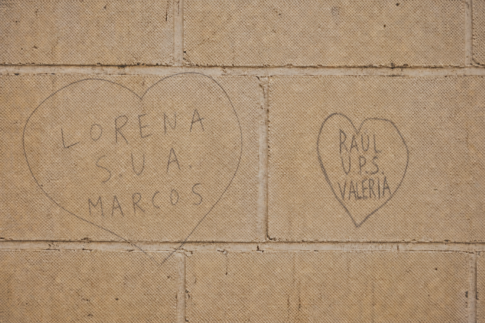

Historia 03
Amores en la edad del pavo

En los años de secundaria llegaba eso que nosotros llamábamos la edad del pavo: la edad del enamoramiento. Parece que la edad del pavo duraba hasta los dieciocho años, ja, ja. De pronto alguien nos gustaba, o empezábamos a sospechar que nosotros le gustábamos a alguien. Cualquier señal podía quedarse grabada para siempre.
A veces era una cartita doblada muchas veces, escrita con nervios: “Yo gusto de vos”. Estaba el famoso mensaje que llegaba por otra persona: “Dice mi amigo que gusta de vos” o “Dice mi amiga que gusta de vos”. Con esa sola frase empezaban las risas, los nervios y las miradas que tratábamos de disimular.
También venía la pregunta que parecía enorme para nuestra edad: “¿Qué querés conmigo? ¿Querés algo serio o querés un trance (besarse)?”. Eran palabras simples, pero para nosotros podían significar muchísimo.
Nos poníamos nerviosos por todo. No sabíamos ni besar y el primer beso parecía una prueba enorme. Así eran los amores de secundaria: inocentes, torpes y llenos de emoción.
Y también estaban las paredes de la escuela, los bancos del curso, los escritorios y cualquier rincón del grado. Ahí aparecía un nombre, una inicial o un corazón hecho apurado con fibra negra o lápiz. “S.U.A.” quería decir su único amor; “U.P.S.”, unidos por siempre. Eran mensajes escritos casi a escondidas, pero para nosotros decían muchísimo.
No hacía falta más. Un nombre, un corazón desprolijo o una cartita alcanzaban para demostrar lo que sentíamos. Hoy esas leyendas en la pared casi no se ven, porque cambiaron los tiempos. Pero quedaron guardadas en la memoria de quienes vivimos aquella edad del pavo, cuando un “me gustás” podía ser todo un mundo.
— 4 —
La sobremesa del recuerdo
¿Te acordaste de alguien?
Comentarios compartidos por quienes también recuerdan aquellos tiempos.
Cargando comentarios…